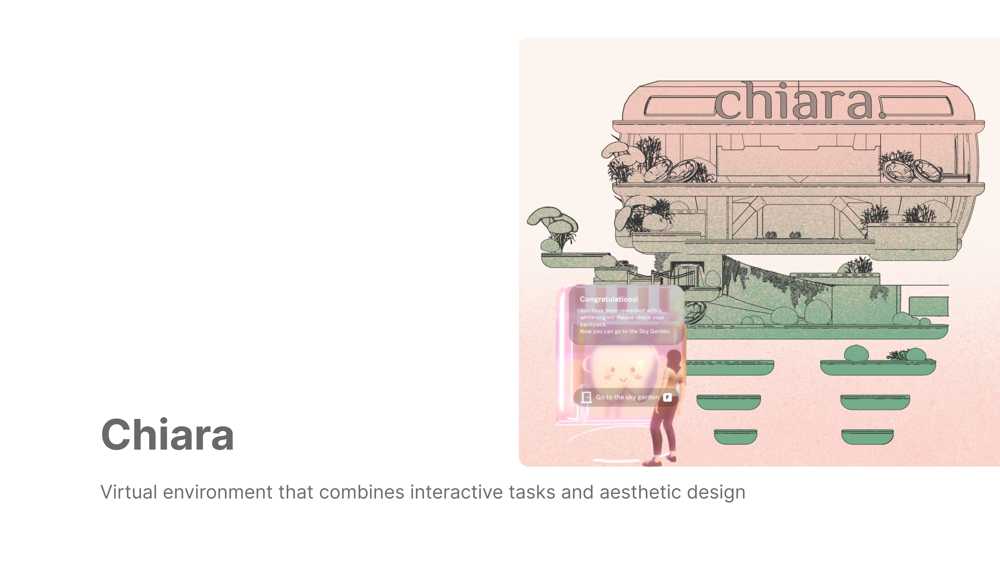
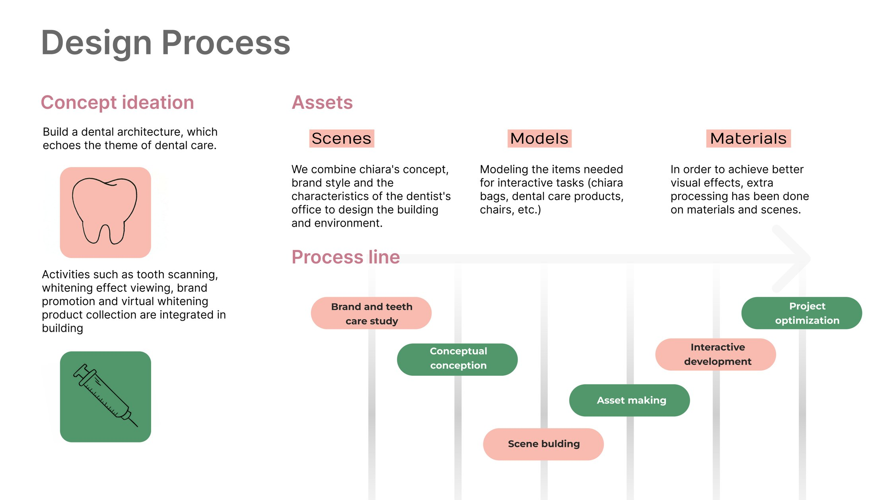
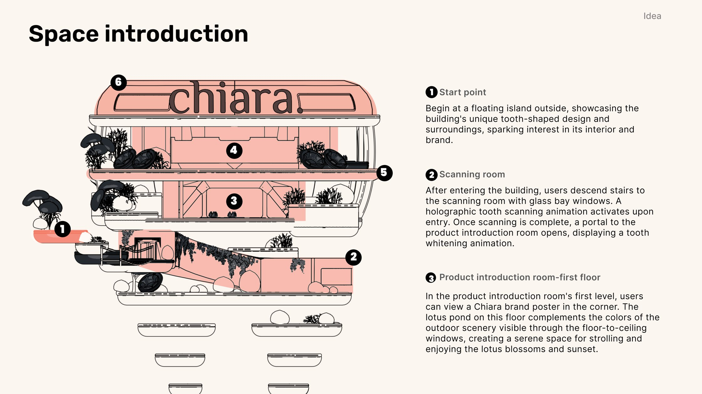
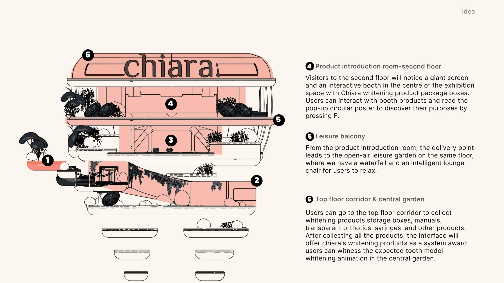
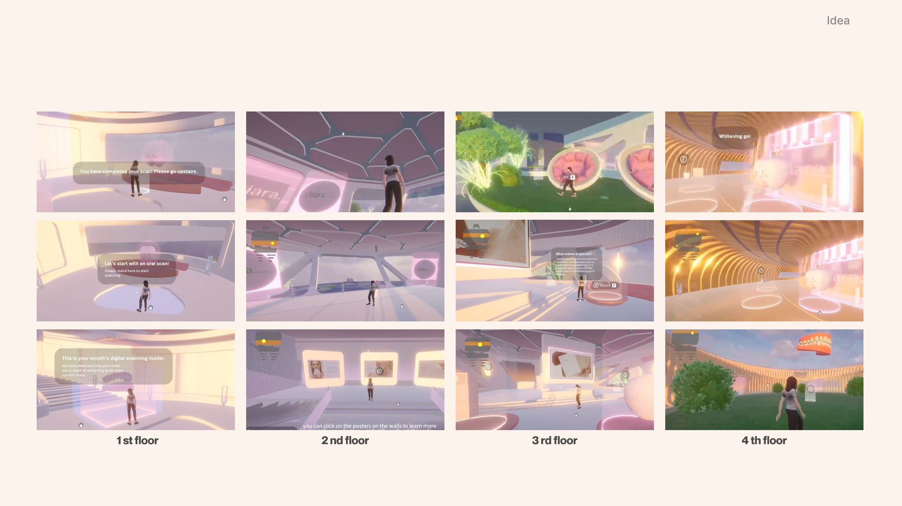
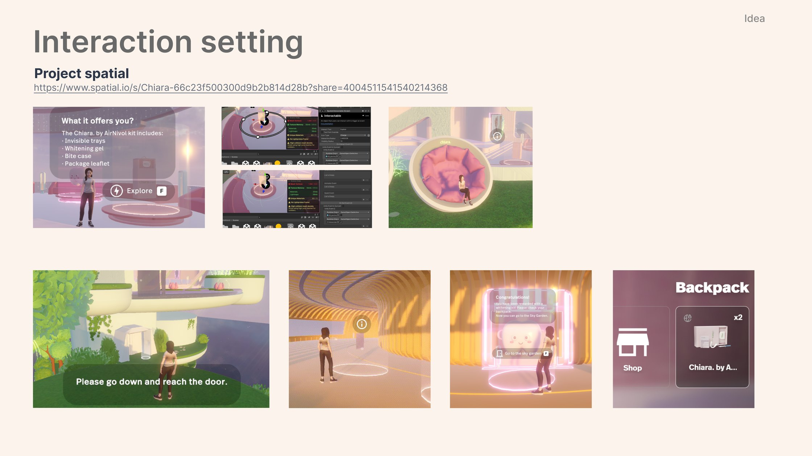

Scenes
The building and environment were designed from Chiara’s concept and brand style crossed with the characteristics of an actual dentist’s office.
Chiara is a virtual environment for a tooth-whitening brand: a building modelled on a tooth, where a visitor gets scanned, explores the treatment across four floors, and leaves with a whitening result they earned rather than an ad they sat through. Built in Unity, hosted on Spatial, in two weeks.

Chiara, by AirNivol, is a treatment that whitens teeth in a non-aggressive, fast and effective way, described as “the accessory for all those who want a dazzling smile”.
The objective was to take a consumer who would normally arrive at a clinic knowing nothing, and walk them through experiencing the service, understanding what the brand is actually for, and coming away with a virtual whitening result of their own. Starting from the brand’s own website, we worked out what the scene needed to be, what the interactions were, and then what kind of space could hold both.
01 / Process
Brand and teeth-care study, conceptual conception, asset making, scene building, interactive development, project optimisation.

The building and environment were designed from Chiara’s concept and brand style crossed with the characteristics of an actual dentist’s office.
Everything the interactive tasks needed had to be modelled, including Chiara bags, dental care products and chairs. If a visitor can pick it up, it had to exist first.
Extra processing on materials and scenes, because in a walkable space the surface quality is the brand impression.
02 / The space
The sequence is the argument: you are scanned before you are sold to, and you collect the product before you are given it.


The top floor corridor is where the visit pays off. Visitors collect storage boxes, manuals, transparent orthotics and syringes along the way, and once the set is complete the system awards Chiara’s whitening products, and then the expected result plays out on a tooth model in the central garden. The brand message lands at the end of an activity the visitor completed, not at the start of one they were interrupted by.
03 / In world


Takeaways
The project deepened my understanding of how to combine spatial design and Unity to create immersive virtual experiences in the medical field. The hardest part was keeping the virtual clinic visit faithful to the real-world one while still being engaging and interactive. A real clinic is legible because it is familiar, and a virtual one has to earn that legibility from scratch.
Working across environment design, 3D modelling, interaction design and animation meant translating a clinical workflow into something walkable: the order a patient actually moves through a treatment, turned into rooms and a route. Doing all of those layers on one project is what made them legible as a single problem rather than six separate ones.
It also put medical branding and user experience in the same frame. Aesthetic appeal, usability and factual accuracy have to hold at once here, and the holographic scan, the product booth and the guided route were all versions of the same question: can a first-time visitor tell what to do next without being told. That is what carried forward. It is the reason I keep designing for healthcare, where spatial design and interactivity can make care more legible rather than only more impressive.